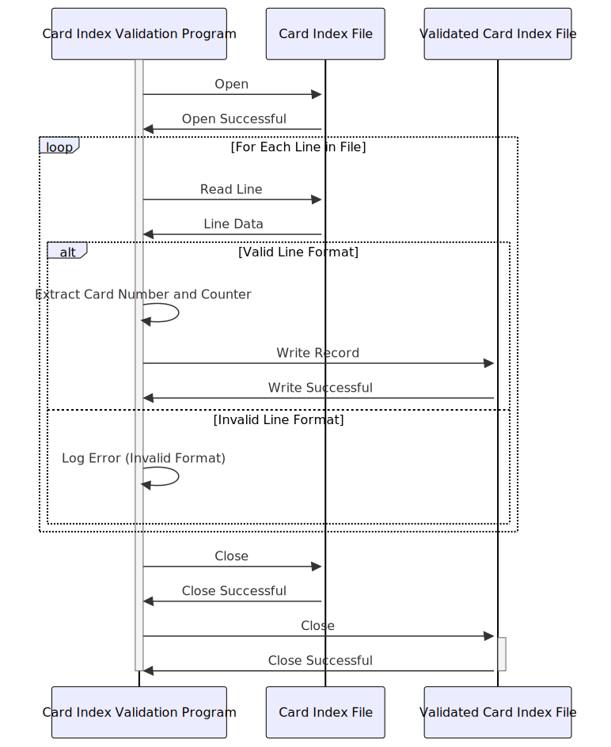

Gerado em: 1º de outubro de 2024
Título do Documento: Validação e Processamento de Índice de Cartão
Descrição Resumida:
Este documento descreve as especificações para um programa que valida e processa informações de cartão de crédito de um arquivo chamado cardxref.txt. O programa lê cada linha do arquivo, valida o formato, extrai o número do cartão e o contador e grava os registros válidos em um arquivo de saída. O programa visa garantir a integridade dos dados e preparar as informações para uso em outras partes do sistema de gerenciamento de cartão de crédito.
Histórias do Usuário:
Como analista de dados, preciso garantir que apenas registros válidos de cartão de crédito sejam usados para análise e relatórios. Este programa me ajuda a conseguir isso validando os dados e fornecendo um arquivo de saída limpo.
Épico Relacionado: 10 - Gerenciamento de Arquivos de Dados
Requisitos Técnicos:
- Leitura e Validação de Arquivo: Este módulo lê o arquivo de entrada (
cardxref.txt) e valida cada registro.
- Entrada: Cada linha do arquivo, representando um registro de cartão de crédito.
- Validação:
- Verifique se a linha tem exatamente 21 caracteres de comprimento.
- Verifique se os primeiros 19 caracteres são numéricos (representando o número do cartão).
- Verifique se os últimos 2 caracteres são numéricos (representando o contador).
- Saída: Uma lista de registros válidos e inválidos com suas respectivas mensagens de erro.
- Extração de Dados: Este módulo extrai o número do cartão e o contador de cada registro válido.
- Entrada: Registro de cartão de crédito válido (21 caracteres).
- Extração:
- Extraia os primeiros 19 caracteres como o
cardNumber.
- Extraia os últimos 2 caracteres como o
counter.
- Saída: Um registro estruturado contendo o
cardNumber e o counter.
- Gravação de Arquivo de Saída: Este módulo grava as informações do cartão extraídas em um arquivo de saída.
- Entrada: Uma lista de registros estruturados, cada um contendo um
cardNumber e um counter.
- Saída: Um arquivo contendo as informações do cartão de crédito validadas e extraídas no formato especificado.
Modelos Relacionados
- CreditCard: Representa um registro de cartão de crédito.
cardNumber: String - O número do cartão de crédito de 19 dígitos.counter: Integer - O contador de 2 dígitos associado ao cartão.
Configurações:
INPUT_FILE_PATH: String - O caminho para o arquivo de entrada (cardxref.txt).OUTPUT_FILE_PATH: String - O caminho para o arquivo de saída.RECORD_LENGTH: Integer - O comprimento esperado de cada registro no arquivo de entrada (21).CARD_NUMBER_LENGTH: Integer - O comprimento esperado do número do cartão (19).COUNTER_LENGTH: Integer - O comprimento esperado do contador (2).
Melhorias de Código:
- Tratamento de Erros: Implemente um mecanismo abrangente de tratamento de erros para capturar e registrar diferentes tipos de erros, como arquivo não encontrado, formato de registro inválido e erros de gravação.
- Log: Adicione um log detalhado para rastrear a execução do programa, incluindo o número de registros processados, registros válidos e inválidos e quaisquer erros encontrados.
- Otimização de Desempenho: Se espera-se que o arquivo de entrada seja muito grande, considere otimizar as operações de leitura e gravação de arquivo para melhor desempenho. Isso pode incluir ler e processar o arquivo em partes ou usar fluxos armazenados em buffer.
- Modularidade de Código: Divida o código em módulos ou funções menores e reutilizáveis para melhorar a organização e a manutenção do código.
Melhorias de Segurança:
- Permissões de Arquivo: Certifique-se de que o programa tenha apenas as permissões de leitura necessárias para o arquivo de entrada e permissões de gravação para o arquivo de saída.
- Criptografia de Dados: Se o arquivo de entrada contiver informações confidenciais do cartão de crédito, considere criptografar o arquivo em repouso e descriptografá-lo na memória do programa para processamento.
- Validação de Entrada: Implemente uma validação de entrada mais rigorosa para evitar vulnerabilidades como travessia de diretório ou injeção de SQL, especialmente se os caminhos dos arquivos forem obtidos da entrada do usuário.
Diagrama Conceitual:

–Made by “Smart Engineering” (by Compass.UOL)–